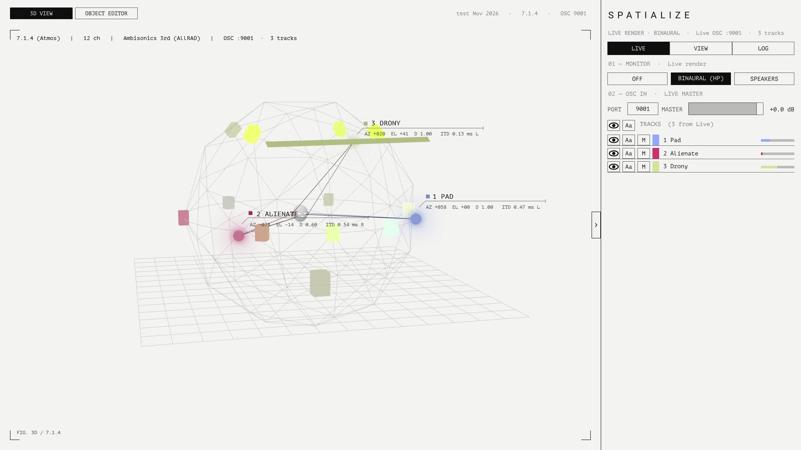
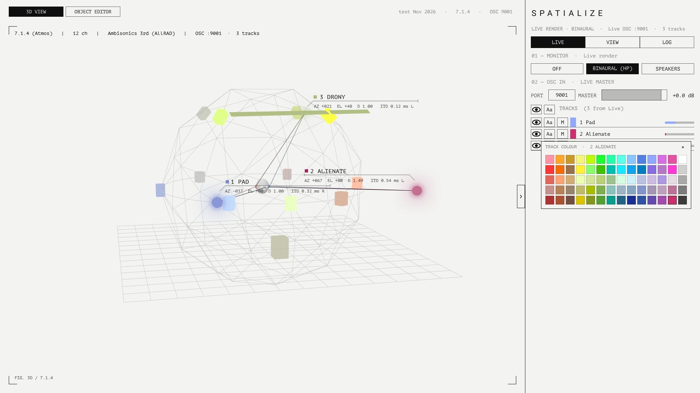
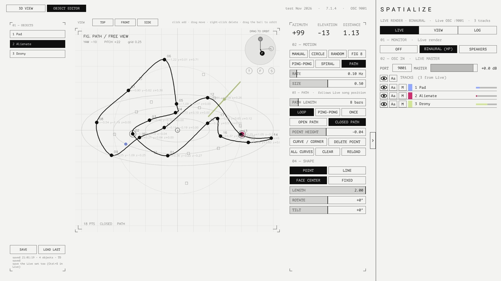

SPATIALISE
Each Ableton Live track becomes one sound object in space. TouchDesigner shows the objects in 3D and lets you shape how they move. The sound itself is rendered inside Live, binaurally for headphones or across a speaker array, while track names, colours, volume and mute stay in step on both sides.
How it fits together
There are three parts. All audio is processed inside Live; TouchDesigner is the screen where positions are shown and edited. The two talk only over local OSC (UDP), so Live keeps sounding exactly the same with TouchDesigner closed.
One per track. Holds position, motion, shape and path, and does its own binaural / speaker panning.
One per set. Gathers every object for TouchDesigner, passes TouchDesigner's edits back to the right object, and switches the render mode (Off / Binaural / Speakers).
A 1920 × 1080 screen: 3D preview, track list, speaker layouts, object editor and log.
Installing and first run
You will need
- Ableton Live 12 Suite (or Standard with Max for Live)
- TouchDesigner, 2025 series (the free Non-Commercial licence works)
- Headphones for binaural monitoring. Speaker mode needs a multichannel audio interface.
In Live
- In Live's browser, choose Places → Add Folder… and add the
Spatialize M4Lfolder. - Put one Spatial Master in the set (the master track is a good place).
- Add a Spatial Object to every track that should be a sound object. Each one is given its own ID (UID) automatically, and it is saved with the set. A duplicated track gets a fresh UID.
- Set the Master to BINAURAL and you will hear it on headphones straight away.
In TouchDesigner
- Open the project (
.toe)./project1/Spatialize_UIis the main screen. - On the LIVE tab of the sidebar, check that PORT reads
9001. Once the tracks appear in Live's order, you are connected. - When you finish, save TouchDesigner with Ctrl+S and save the Live set as well. Paths and motion settings live in the Live set; the TouchDesigner save keeps the screen and theme settings.
Spatial Object · Spatial Master
Spatial Object parameters
All of them are ordinary Live parameters, so you can automate them, map them to macros or drive them with modulators. The position dials (Azimuth / Elevation / Distance) set the centre of the motion.
| Parameter | Range | Meaning |
|---|---|---|
| Azimuth | −180 … 180° | 0 = front, + = left (anticlockwise), ±180 = behind |
| Elevation | −90 … 90° | 0 = ear height, 90 = straight overhead |
| Distance | 0 … 2 | 1.0 = on the speaker radius |
| Motion | 7 modes | Manual · Circle · Random · Figure 8 · Ping-Pong · Spiral · Path |
| Rate / Size | Hz / 0 … 1 | Speed and extent of the motion (not used by Path) |
| Path Length | 1 … 64 bars | Length of one pass of the path, synchronised to Live's song position |
| Path Mode | Loop · Ping-Pong · Once | How the path plays |
| Closed | Open · Closed | Whether the last point joins back to the first |
| Shape | Point · Line | A single point, or a straight line source through the centre |
| Length | 0 … 2 | Length of the line, in radius units |
| Rotate / Tilt | ±180° / ±90° | Horizontal direction / up-down tilt of the line |
| Facing | Centre · Fixed | Centre = turns with the object so it always faces the listener; Fixed = fixed in the room |
| Object (UID) | automatic | The object's unique number, saved with the set. Hidden parameter |
Spatial Master
- Mode: OFF BINAURAL SPEAKERS, the same switch as MONITOR in the TouchDesigner sidebar.
- Collects the objects' OSC and sends it to
127.0.0.1:9001; listens on9002for edits from TouchDesigner. - Track mute, master volume and track colour changed in TouchDesigner also reach Live through the Master.
The screen

Top bar
3D VIEW OBJECT EDITOR switch the centre of the screen. On the right: project name · layout · OSC port.
Moving around the 3D view
| Input | Action |
|---|---|
| Left drag | Orbit the camera |
| Wheel / middle drag | Zoom |
| VIEW tab → AUTO ORBIT | Slow automatic rotation |
| VIEW tab → RESET VIEW | Back to the default viewpoint |
Sidebar
The right-hand panel folds away with the › button on its edge. It has three tabs.
| Tab | Contents |
|---|---|
| LIVE | 01 MONITOR Off / Binaural (HP) / Speakers · 02 OSC IN port (editable) and MASTER volume slider · TRACKS per track: show (eye), name label (Aa), mute (M), colour, level meter |
| VIEW | 01 SPEAKER LAYOUT click to open the list · 02 PANNING MODEL VBAP / DBAP / AMBI / WFS · 03 VIEW auto orbit, reset view, dome guide, names, ears, source, theme, object editor |
| LOG | OSC and device messages. Drag to select and copy. COPY / CLEAR / RESEND (ask Live to send its whole state again) |
Changing a track's colour

Click the colour square on a track row to open the palette. Pick a colour and both TouchDesigner and the Live track change. Click the same square again, or ×, to close it. The current colour is outlined.
Object editor

Open it from OBJECT EDITOR in the top bar or on the VIEW tab. Anything you change here goes straight to the Live device's parameters, and the screen shows what the device sends back, so editing in either place gives the same result.
Viewpoint
- The TOP FRONT SIDE buttons, or the T / F / S dots at the top right of the canvas.
- Drag with the left button inside the round area at the top right (DRAG TO ORBIT) to turn the view to any angle. The F (front), L (left) and U (up) axes inside it turn too, and the caption reads FREE VIEW · YAW / PITCH.
Drawing a path
| Input | Action |
|---|---|
| Click on empty space | Add a point (the object switches to PATH motion) |
| Drag a point | Move it; its depth along the viewing direction is kept |
| Right-click | Delete a point |
| CURVE / CORNER | Toggle the selected point between curve (●) and corner (■) |
| POINT HEIGHT | Height of the selected point |
| OPEN / CLOSED PATH | Whether the path is a closed loop |
| ALL CURVES · CLEAR · RELOAD | Make every point a curve · clear the path · read it again from Live |
Curves are Catmull-Rom (Hermite) splines, and playback moves at constant speed along the arc length. Position = Live song position ÷ (Path Length × 4 beats).
Saving
SAVE writes every object's settings to spatialize_snapshots/<time>.json and latest.json, and saves the TouchDesigner project. LOAD LAST restores the last snapshot. Save the Live set separately.
Rendering — binaural and speakers
BINAURAL (headphones)
For each object's direction, the device works out the interaural time difference (ITD) and head shadow and renders to stereo. In the 3D view the listener's ears are tinted L blue / R red, and the brightness of each line from an object to an ear shows how much of the sound reaches that ear. The ITD 0.45 ms R under a name tells you which ear hears it first, and by how much.
A Line shape is split into two binaural chains, one per end: input L → end A, input R → end B.
SPEAKERS
3D VBAP gives a gain per speaker, which the track's sends deliver to return tracks named SPK 1 … SPK n. Route each return's output to a channel of your interface. In speaker mode the object tracks' outputs switch to Sends Only.
Speaker layouts
| ID | Name |
|---|---|
| stereo | Stereo |
| quad | Quad |
| 5_1 · 7_1 | 5.1 (ITU-R BS.775) · 7.1 |
| 5_1_4 · 7_1_4 · 9_1_6 | 5.1.4 · 7.1.4 · 9.1.6 (Atmos) |
| hex6 · oct8 · ring16 | Hexagon 6 · Octagon 8 ring · Ring 16 |
| cube8 | Cube 8 |
| dome25 | Dome 25 (12 / 8 / 4 / 1) |
| wfs_line32 · wfs_rect64 | WFS line 32 (front) · WFS rectangle 64 |
Panning model (preview)
PANNING MODEL on the VIEW tab chooses how the speakers light up in the 3D view: VBAP-like (angle), DBAP-like (distance), Ambisonics 3rd order (AllRAD) or WFS (wavefront). A speaker box's brightness is that object's gain.
Co-ordinate systems
Distance 1 = speaker radius. Azimuth + = left, Elevation + = up.
Right = +X. Converted by aed_to_dev / dev_to_aed in the layouts module.
Line source: centre c = aed_to_dev(az, el, d), horizontal heading h = (az if Facing is Centre, 0 if Fixed) + 90° + Rotate, tilt t = Tilt, direction u = (cos t·cos h, cos t·sin h, sin t), ends c ± u·Length/2.
OSC messages
All local UDP. Live → TouchDesigner on 127.0.0.1:9001; TouchDesigner → Live (Spatial Master) on 9002.
Live → TD (9001)
| Address | Carries |
|---|---|
| /spat/obj | Object position, level and colour (about 30 Hz) |
| /spat/name | Track name and Live track order |
| /spat/form | Motion and shape settings (motion, shape, len, rot, tilt, rate, size, bars, pmode, muted, facing, closed) |
| /spat/path | Stored path points |
| /spat/off | Sent when a device is removed |
| /spat/master | Master state (render mode and so on) |
| /spat/dbg | Debug messages → LOG tab |
TD → Live (9002, Spatial Master)
| Address | Carries |
|---|---|
| /spat/setmode | 0 Off · 1 Binaural · 2 Speakers |
| /spat/spk | Speaker layout (unit vectors + LFE flag) |
| /spat/color | <id> r g b → Live track colour |
| /spat/objset | <uid> <key> <value> parameter change · <uid> mute 0|1 · 0 mastervol <dB> |
| /spat/pathset | <uid> <n> x y z c … store a path |
| /spat/req | Send the whole state again (LOG → RESEND) |
| /spat/info | Information request |
# e.g. set object 598428's motion to Circle
/spat/objset 598428 motion 1
# a three-point path (x y z curve)
/spat/pathset 598428 3 0.8 0.4 0.0 1 -0.2 0.9 0.3 1 -0.7 -0.5 0.0 0Themes and display
The same design with paper and ink swapped. THEME button on the VIEW tab.
The UI, the track names and the 3D-view HUD all share one typeface.
A soft blur in each object's own colour. Spatialisation_test → Theme → Object Haze (default 2.5; 0 turns it off).
- Track names: a diagonal leader from the object to a fine horizontal rule, with a colour square and the name above and AZ EL D ITD below. Near the edge of the screen the callout flips to the other side.
- Dome guide: dashed lines. Spacing is
DASH, GAPat the top of thegeo_dome/dome_dashscript. - Listener: a grey head model with L/R-coloured ears, and closed eyes and a mouth drawn in white line. Every 3.2 seconds the mouth may change between neutral, a smile, an "o" and a yawn (
SLOTandWEIGHTSingeo_eyes/eyes). - Brightness: each object's brightness follows its track level after the fader, using the dB map
(20·log10(a) + 48) / 48.
Troubleshooting
| Symptom | Fix |
|---|---|
| Tracks don't appear in TD | Check PORT = 9001 on the LIVE tab and that a Spatial Master is in the set. Press RESEND on the LOG tab. |
| Editor says "old Spatial Object" | That track has an earlier version of the device. Close and reopen the Live set, or insert the device again. |
| Position jumped back to 0 | This can happen right after the device script reloads. Reopening the set brings back the saved values. |
| Two objects share a number | Duplicated tracks get a new UID automatically. If they still clash, delete the device and add it again. |
| TD buttons look blank or white | Reopen the project. The UI refreshes on Uitick (10 Hz), so that parameter must exist. |
| No sound in speaker mode | Check the returns are named SPK 1 … SPK n, that each return is routed to an interface channel, and that Live's output channels are enabled. |
What's next
- Scenes / timeline: snapshots of every object, linked both ways with Live's arrangement locators.
- Audio status: Live's sample rate and buffer size, read-only, on the LIVE tab.
- Haze for Line objects: the blur effect on line sources too.
- Label collision: callouts of nearby objects move out of each other's way.
- A collapsible settings panel in the editor.
Changelog
| Date | Changes |
|---|---|
| 2026.11.08 | Free orbit view in the editor · redesigned track-name callouts · object haze · Ableton 70-colour palette · dashed dome · grey head model with expressions · unified typeface and sizes · this wiki |
| 2026.11.08 | v7: seven motion modes, Line shape (length, rotation, tilt, facing), path editing (open / closed), UIDs, track mute and master volume, object editor moved into the main UI |
| 2026.11 | Graphic-score themes (White / Black), sidebar tabs (LIVE / VIEW / LOG), collapsible sidebar, layout list, monitor selector |